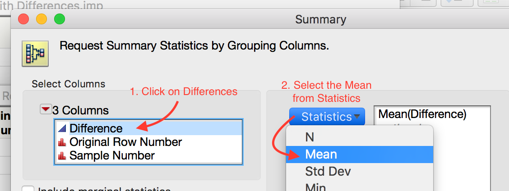

Comparing a Numerical Variable Across Two Groups¶
Comparing Two Population Means: Dependent Samples¶
The hypothesis testing procedures presented in this section should be used when the observations from the two groups being compared are dependent. Whether or not the observations are dependent is determined by how the data are collected. To see this, consider the following example.
Example 6.1: Thanksgiving Holiday Weight Gain¶
In a 2006 study published in Nutrition Journal, researchers were interested in assessing potential changes that occur in body weight during the Thanksgiving holiday break in college students. This paper’s abstract indicates that “a total of 94 college students reported to the human body composition laboratory at the University of Oklahoma following a 6-hour fast with testing occurring prior to, and immediately following the Thanksgiving holiday break. Body weight was assessed using a balance beam scale while participants were dressed in minimal clothing.”
Source:
Hull et al. The Effects of the Thanksgiving Holiday on Weight Gain. Nutrition Journal 2006, 5:29; doi:10.1186/1475-2891-5-29.
Research Question:
On average, does body weight of college students increase over the Thanksgiving holiday break?
Questions:
- What is the response variable of interest?
- What is the predictor variable of interest?
The raw data from this study were not available; however, the data in the file ThanksgivingWeightData.jmp are similar to the actual results obtained by the researchers. A portion of these data is shown below:
Questions:
- What can be said about the weight of Subject #1 as compared to Subject #7, for example, regardless of whether the data were collected before or after Thanksgiving?
Note
For these data, the first pre-weight is related to the first post-weight (the two measurements were made on the same person). Thus, these two samples are dependent.
In other words, some of the variability in the responses might be due to differences between time periods (before vs. after), but much of the variability in the observations is likely due to differences between people! So, to control for this variability in weights from person to person (which will help us isolate the effect of Thanksgiving break), we will work with the DIFFERENCES on each subject, instead. This will remove the structure of dependence between the pre- and post-Thanksgiving groups and will control for the fact that some people, in general, tend to weigh more (or less) than others. In the end, this helps us to isolate the effect of Thanksgiving break (i.e., before vs. after).
Calculating the Difference in JMP¶
First, open the file called ThanksgivingWeightData.. To calculate the difference, create an additional column (double click on empty column next to “‘Post Weight”) and title it “Difference.” Right-click on the new column header and select Formula.

In the edit window, tell JMP to calculate the difference as follows:

Click Apply and then OK, and JMP returns the following (only the results for the first 10 subjects are shown below):
Questions:
- What does a positive difference of 3.9 indicate?
- What does a difference of -1.9 indicate?
To determine what the average difference is, we can analyze the distribution of the differences using the descriptive methods discussed in Chapter 4:

Questions:
- What is the average difference of the 94 subjects? Interpret this value.
- If Thanksgiving break had no effect on body weight, what would you expect these differences to be, on average?
- If the research hypothesis is correct (body weights of college students increase over Thanksgiving break), what would you expect these differences to be, on average?
Note
Note that these differences are represented by a single column of data. So, instead of viewing this as a problem involving a categorical predictor and a numerical response, you could view this as a problem involving a single numerical variable – the differences! Therefore, the hypothesis testing procedure is exactly the same as the procedure for testing a single population mean we discussed in Chapter 5.
That is, the parameter of interest is the true population average of the differences which we will represent by \(\mu_{difference}\).
- Our best estimate for this parameter is the sample mean of the observed differences. We’ll call this quantity \(\bar{x}_{difference}\).
- The sample standard deviation of the differences will be denoted by \(s_{difference}\)
Bootstrap Confidence Interval for the Difference¶
We will use a bootstrap confidence interval as a first attempt at analyzing these data. To create a bootstrap sample in JMP, you will need to install the JMP add-in titled SampleWithReplacement v0.14.jmpaddin. Download and double click the file. You can now sample with replacement by going to Add-Ins > Sample with Replacement > Sample Now. Take a bootstrap sample of the differences using this add-in as shown below.


The result in a new table that contains the bootstrap sample of the differences. Compute the mean and standard deviation of this sample use Analyze > Distribution.


Task 1: Use JMP to take a few bootstrap samples.
Take 10000 bootstrap samples.

Compute the bootstrap mean difference for each sample and store these means in a new data table.

 

Analyze the distribution.


Compute a 95% confidence interval for the mean difference between the pre- and post-Thanksgiving weights. Paste a screen shot below and construct an appropriate sentence for this interval.

“We are 95% confident that the mean weight gain over Thanksgiving break for all college students is between 0.66 lb. and 1.76 lb.”
Based on this interval, what can we confidently say about the differences between pre-and post-Thanksgiving weights? Are we confident that there is, on average, weight gain? Explain.
Since the interval is positive and all of the values are larger than 0.65lb., we are confident that there is positive weight gain that is at least 0.65 lb.
Using the Bootstrap to Test a Hypothesis¶
Note that these differences are represented by a single column of data. So, instead of viewing this as a problem involving a categorical predictor and a numerical response, you could view this as a problem involving a single numerical variable – the differences! That is, the parameter of interest is the true population average of the differences which we will represent by μdifference.
- Our best estimate for this parameter is the sample mean of the observed differences. We’ll call this quantity.
- The sample standard deviation of the differences will be denoted by sdifference.
Before we discuss using a bootstrap sample to run a hypothesis test, let’s set up the null and alternative hypothesis for these data. (For convenience, the research questions is given below.)
Research Question:
On average, does body weight of college students increase over the Thanksgiving holiday break?
Step 1: Set up the null and alternative hypotheses
Notice that we subtracted \(After - Before\). If the research hypothesis is true, then this value will be positive, i.e. larger than 0. Thus our hypotheses are as follows.
\[\begin{split}H_0: \mu_{diff} = 0\\ H_a: \mu_{diff} > 0\end{split}\]
Note
To correctly determine the direction of the alternate hypothesis, you need to consider both the research question and the order in which we subtracted.
Recall that we run a hypothesis test by performing the following two steps.
- Simulate the null hypothesis
- Determine if our statistic is unusual given this null distribution.
In this case, the null distribution is the no average weight gain distribution. To use the bootstrap distribution to conduct a hypothesis test, we shift the distribution to be centered at the correct value, as described below.
Steps in a Bootstrap Hypothesis Test
To use the bootstrap to simulate this distribution, we will need to shift the mean of our data to simulate no weight gain. This is done by performing the following steps.
Step 1: Make a new column of differences by subtracting the original mean difference from the original differences. (You should verify that the resulting column has a mean of 0.)
Step 2: Take many bootstrap samples from this theoretical column to simulate the null distribution. For each sample compute the bootstrap mean.
Step 3: Use the resulting distribution to compute a p-value for the original statistic and make the appropriate conclusion to complete the testing process.
Luckily, there is a nice JMP add-in that automates this process. Please download and install the Randomization Testing Beta 3.jmpaddin
Let’s apply this process to the Thanksgiving weight gain data. We will use a nice add-in to JMP that automates these steps for use. To use this add-in, we need to save our data set with the differences.

Now run the randomization addin by
going to Add-Ins > Randomization Testing

Click Use Other Data and open your JMP file with differences.
Select the differences column, set the simulation controls to simulate 1000 samples by Resampling with Mean = 0 (The null mean).

Pick the correct tail for this test in Test Selection and note the p-value.

p-value = 0
Step 3: Write a conclusion in the context of the problem
As the p-value (0) is lower than 0.05 (5%), we find that our statistic is unusually large. Thus, we have strong evidence supporting the claim that there is an average positive weight gain for all college students over Thanksgiving break.
Paired T-Test in JMP¶
Recall that we used a t-confidence interval in JMP as an alternative to the bootstrap interval. In the same way, we can use a t-test in JMP as an alternative to the bootstrap test. We first assess the normality of the data set. We can use the JMP test if (a) the original differences are normal or (b) the sample size is large enough (at least 30).
For the Thanksgiving weight gain data, run a JMP t-test by replacing our work that used the bootstrap with the following these steps (using JMP).
Step 2: Make a difference column and assess the normality of the differences


Since we have a large sample and the data is relatively normal, it is safe to use the t-test in JMP.

Step 3: Find the t-statistic and the p-value
To calculate this associated p-value in JMP, add the test probability to the difference distribution.
p-value < 0.0001


{kind=link}
{kind=link}
{kind=link}
{kind=link}
{kind=link}
Note
When reading the t-test output from JMP, the picked the p-value based on
- Prob > |t| is for a two-tail test.
- Prob > t is for a greater than test.
- Prob < t is for a less than test.